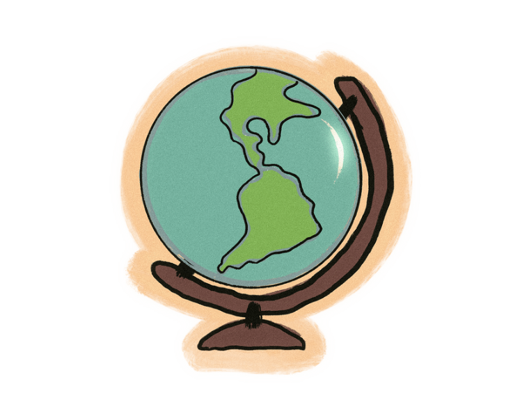

Soy profesional técnico superior de ASIR, puedo gestionar recursos, implementar servicios tecnológicos y mejorar la eficacia de tus sistemas.
He hecho parte de distintos proyectos en mi proceso de aprendizaje y hemos logrado reconocimientos geniales:
Realicé un programa introductorio de diseño donde aprendí sobre creatividad y cómo comunicar o abstraer ideas. Fué una experiencia que me permitió mejorar en mis habilidades artísticas al saber entender e interpretar mejor. Esta experiencia fortaleció y despertó en mí el amor al arte. Actualmente, me encanta la idea de integrar la creatividad con el desarrollo tecnológico; por eso, seguir mejorando en ambas disciplinas me entusiasma mucho.
• Español • Inglés • Alemán
Saber idiomas nos hace más flexibles y adaptables en un mundo globalizado. Hablo Español de forma nativa y tengo un nivel intermedio de alemán e inglés; aunque son bases, me permiten aprovechar diversas oportunidades en entornos multilingúes.

He realizado cursos en Áreas emergentes como la ciberseguridad e inteligencia artificial.
Estos campos me parecen fascinantes y mi objetivo es integrar estos conocimientos para mejorar soluciones.
A medida que la tecnología avanza, siento que es importante estar al día con las nuevas tendencias,
comprendiendo su impacto en el mundo digital y las oportunidades que brindan.
Mi objetivo es seguir creciendo en el ámbito de la ciberseguridad y la administración de sistemas, participando en proyectos que permitan mejorar la seguridad y eficiencia de las infraestructuras tecnológicas.